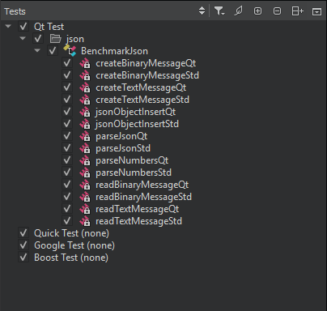
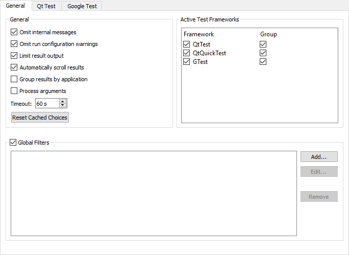
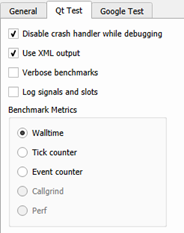
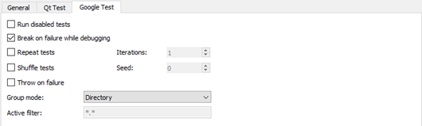

Running Autotests
Qt Creator integrates the Qt Test framework and Google C++ Testing Framework for unit testing applications and libraries. You can use Qt Creator to build and run Qt tests, Qt Quick tests (QML-based Qt tests), and Google tests for your projects.

Creating Tests
You can use a wizard to create projects that contain Qt or Google tests.
Creating Qt Tests
To create a Qt test:
- Select File > New File or Project > Other Project > Auto Test Project > Choose to create a project with boilerplate code for a Qt test.
- In the Project and Test Information dialog, specify settings for the project and test:
- In the Test framework field, select Qt Test.
- Select the GUI Application check box to create a Qt application.
- In the Test case name field, enter a name for the test case.
- Select the Requires QApplication check box to add the include statement for QApplication to the main.cpp file of the project.
- Select the Generate initialization and cleanup code checkbox to add functions to your test that are executed by the testing framework to initialize and clean up the test.
- In the Build system field, select the build system to use for building the project: qmake, CMake, or Qbs.
Qt Creator creates the test in the specified project directory. Edit the .cpp file to add private slots for each test function in your test. For more information about creating Qt tests, see Creating a Test.
Creating Google Tests
To create a Google test:
- Select File > New File or Project > Other Project > Auto Test Project > Choose to create a project with boilerplate code for a Google test.
- In the Project and Test Information dialog, specify settings for the project and test:
- In the Test framework field, select Google Test.
- In the Test case name field, enter a name for the test case.
- In the Test set name field, enter a name for the test set.
- Select the Enable C++ 11 check box to support C++ 11 features in the test.
- In the Google test repository field, select a directory that contains a clone of the googletest repository.
To use an installed Google C++ Testing framework instead, see Setting Up the Google C++ Testing Framework.
- In the Build system field, select the build system to use for building the project: qmake, CMake, or Qbs.
Qt Creator creates the test in the specified project directory. For more information about creating Google tests, see the Google Test Primer.
Setting Up the Google C++ Testing Framework
To build and run Google tests, you must have the Google C++ Testing framework installed and configured on the development host. You can either clone it from Git Hub or install it from an installation package.
To configure a project to use a cloned Google testing framework, edit the INCLUDEPATH variable in the project file (.pro) to include the source and include folders of Google Test's googletest and googlemock. Usually, you need to add the following subfolders:
googletestgooglemockgoogletest/includegooglemock/include
You also need to add the necessary files to the SOURCES variable. For example:
googletest/src/gtest-all.ccgooglemock/src/gmock-all.cc
To configure a project to use an installed Google testing framework package, add the following include paths to the .pro file:
<googletest_install_path>/include/gtest<googletest_install_path>/include/gmock
Then add linker options to be able to find the libraries and to link against them. For example, for qmake based projects, you typically need to add the following values to the .pro file:
LIBS += -lgtest -L<path_to_gtest_lib>LIBS += -lgmock -L<path_to_gmock_lib>
Building and Running Tests
To build and run tests:
- Open a project that contains tests.
- In the Tests view, select the tests to run.
- In the Test Results output pane, select:
 (Run All Tests) to run all tests.
(Run All Tests) to run all tests.- (Run Selected Tests) to run the selected tests.
- (Run Tests for Current File) to run the tests in the file currently open in the code editor.
Note: By default, Qt Creator builds a project before deploying and running it.
If a test takes more than a minute to execute, the default timeout might stop the test execution. To increase the timeout, select Tools > Options > Testing > General.
Selecting Tests to Run
The Tests view shows all the tests found for the currently active test frameworks in the current project. Select the test cases to run.

If a Qt Quick test case does not have a name, it is marked Unnamed in the list. Unnamed test cases are executed when you select Run All Tests. You cannot select or deselect them.
Qt Creator scans the project for tests when you open the project and updates the test list for the currently active test frameworks when you edit tests. To refresh the view, select Rescan Tests in the context menu.
To group related test cases for an active test framework, select Tools > Options > Testing > General, and then select the Group check box next to the framework name in the Active Test Frameworks list. By default, tests are grouped based on the directory where they are located.
To group Google tests by using a GTest filter, select Google Test. In the Group mode field, select GTest Filter and specify the filter to use in the Active filter field. For more information about GTest filters, see Running a Subset of the Tests.

You can add filters to specify the directories within the current project to scan for tests. Select the Global Filters check box, and then select Add to specify paths to the directories to scan for tests. Wildcards are not supported in the filter expressions.
In some special setups, Qt Creator cannot deduce which executable or run configuration it should use. If Qt Creator repeatedly asks you to select the tests to run when trying to execute tests, you can enable it to cache your choices and use them were appropriate. The cached information is cleared when you switch to another project, close the current one, or select Reset Cached Choices.
To show or hide init and cleanup or data functions in the Tests view, select  (Filter Test Tree), and then select Show Init and Cleanup Functions or Show Data Functions. Double-click a function in the list to open its source code in the code editor.
(Filter Test Tree), and then select Show Init and Cleanup Functions or Show Data Functions. Double-click a function in the list to open its source code in the code editor.
The test cases are listed in alphabetic order. To list them in the order in which they are defined in the source code, select (Sort Naturally).
Running and Debugging Tests from Code Editor
You can run and debug tests in the file currently open in the code editor. To run all tests in the open file, select Tools > Tests > Run Tests for Current File.
To run the test currently selected in the open file, select Run Test Under Cursor in the context menu.
To debug the currently selected test, select Debug Test Under Cursor in the context menu.
Specifying Settings for Running Qt Tests
The code inside a benchmark test is measured, and possibly also repeated several times in order to get an accurate measurement. This depends on the measurement back-end that you can select in the Benchmark Metrics group in Tools > Options > Testing > Qt Test: walltime, CPU tick counter, event counter, Valgrind Callgrind, and Linux Perf. For more information, see Creating a Benchmark.

To receive verbose output when running benchmarks, select the Verbose benchmarks check box.
To allow the debugger to interrupt Qt tests on assertions, select the Disable crash handler while debugging check box.
To record information about signals and slots in the test log, select the Log signals and slots check box.
Specifying Settings for Running Google Tests
To specify settings for running Google tests, select Tools > Options > Testing > Google Test.

To run disabled tests, select the Run disabled tests check box.
To run several iterations of the tests, select the Repeat tests check box and enter the number of times the tests should be run in the Iterations field. To make sure that the tests are independent and repeatable, you can run them in a different order each time by selecting the Shuffle tests check box.
To turn failures into debugger breakpoints, select the Break on failure while debugging check box. To turn assertion failures into C++ exceptions, select the Throw on failure check box.
Viewing Test Output
The test results are displayed in the Test Results output pane in XML format. XML can be parsed more easily and reliably than plain text.
However, if a Qt test crashes, it might not produce complete XML code that can be parsed, which might lead to information loss. The lost information might be retrievable when viewing the results as plain text. To view the results of Qt tests as plain text, select Tools > Options > Testing > Qt Test, and then deselect the Use XML output check box. Then select the (Switch Between Visual and Text Display) button in the Test Results output pane to switch to the text display.
The following table lists the messages that the Test Results output pane displays:
| Result | Description |
|---|---|
| BENCH | Benchmark test. |
| DEBUG | Debug message. |
| FAIL | Test case failed. Double-click the line for more information. |
| FATAL | A fatal error occurred that stops the test case from being run, for example. |
| INFO | Informative message. |
| INTERNAL | Internal message. |
| PASS | Test case passed. |
| SKIP | Test case was skipped. |
| SYSTEM | An error message received from or influenced by the OS. |
| XFAIL | Test case is expected to fail, so it is marked by using the QEXPECT_FAIL macro. If the test case passes instead, an unexpected pass (XPASS) is written to the test log. |
| XPASS | Test case passed even though it was expected to fail. |
| WARN | Warning message. |
Since Qt 5.4, you can provide a BLACKLIST file for tests. It is mainly used internally by the Qt CI system.
| Result | Description |
|---|---|
| BFAIL | Blacklisted test case failed. |
| BPASS | Blacklisted test case passed. |
| BXFAIL | Blacklisted test case failed but was marked to be expected to fail. |
| BXPASS | Blacklisted test case passed even though it was expected to fail. |
To view only messages of a particular type, select (Filter Test Results), and then select the types of messages to show. To show all messages, select Check All Filters. To deselect all message types, select Uncheck All Filters.
By default, test result output is limited to 100,000 characters. The output pane is automatically scrolled down when new results are added. To display full results, select Tools > Options > Testing > General, and then deselect the Limit result output check box. To disable automatic scrolling, deselect the Automatically scroll results check box.
Test results can be grouped by the executable path that was used to run the tests. This is useful if you have multiple test executables and run them all at once. To enable this functionality you need to select the Group results by application check box.
Internal messages and run configuration warnings for deduced configurations are omitted by default. To view them, deselect the Omit internal messages and Omit run configuration warnings check boxes.